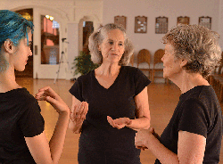
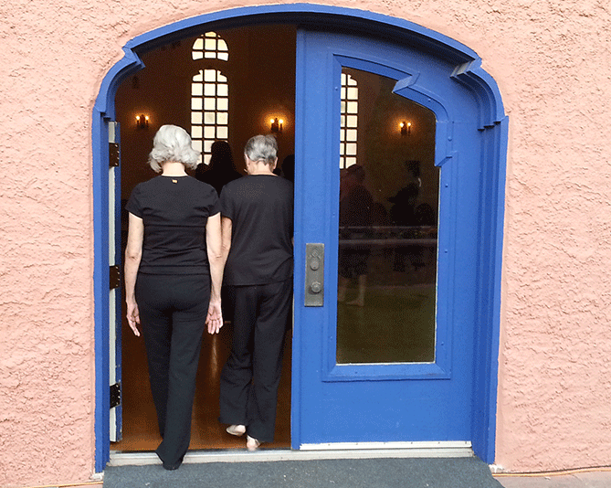

A Transformative Dance Experience at the 19th Annual Creative Dance Congress
By Sarah Boone I am so thankful to have gotten to experience Creative Dance by learning from my mom, Jean Tobias. If it weren't for her and moving back to my hometown of Santa Fe, I might not have been a participant in the Congress this year. As a first time participant at a Creative Dance Congress, I gained a deeper appreciation for improvisational dance and connected with my own creativity. The group of dancers were all women between 20 and 84 years old. Nothing can express the wonderful bond that was formed between us over the six days we danced together. It was really special to be able to dance with my mom and get to experience this art form that is so close to her heart. There was also another mother-daughter pair in the Congress who danced together.
It was great dancing with dancers who have experience with creative dance as well as other first time participants. Everyone seemed ready to dive into the creative pool and immerse themselves in improvisation. It was an honor to be guided through each session by such wonderful teachers. As a technically trained dancer, I was able to let go of technicality and connect with my kinesthetic sense through new ideas, playfulness, imagery, sound, sensation, new awareness, and creative pauses. It was amazing what came out of creative pauses--various tempos, different levels, everyone connecting through waves of intuition and going on dancing journeys together through the space.
We danced in a beautiful ballroom at the Scottish Rite Center which had a tall ceiling, wooden chairs surrounding the ballroom's wood floor, and a doorway leading outdoors into a grassy courtyard. Having this large space to dance in was a treat and I think it influenced our dancing in a profound way.
Helen Horigan led Group Movement Expression which taught me to move with a group and how to sense other bodies moving through space around me. I gained a new awareness, and began to feel more and more comfortable dancing with others.
My mom, Jean Tobias, taught Force of Nature, which was a great lesson on how to make forceful and forceless movements and how to connect to a deep environmental awareness. Each group danced an element; earth, water, fire and air. All of the elements came together in a group dance and we all had to find ways to coexist with one another.
Yael Schweitzer taught Dancing from the Heart, which was a wonderful experience and perhaps my favorite dance session. During this session, I was able to dance from the heart, express emotion, and feel grounded and strong in my dancing. I began to move with intent and ease and I connected with everyone around me in a way that came naturally, sometimes subconsciously. Everyone was unified in one idea so moving together became effortless. I discovered the healing power of dance through ideas such as supporting yourself, expressing love and compassion from the heart, and being happy and healthy.
Griff Goehring led us in a session about Space. This session expanded my awareness of how we become shapes in space both individually, and as a group body. I have had a lot of practice in spatial awareness individually, but this session taught me something new and exciting about making shapes in space as a whole group of dancers. When we split up into two groups and each did a group dance, it was amazing. From beginning to end, the group moved together very organically while making beautiful shapes. As a technically trained dancer, always having to concentrate on the placement of my body in space, it was very satisfying to move from one spot in the room to the next without having to remember any steps, allowing my movement feeling to lead me.
On the last day of the workshop, Sue Pfaffl led us in an outdoor dance at the scenic and beautiful Santa Fe University of Art and Design. We danced in trees and around sculptures letting the magic of nature take our dancing to new heights. One of the exercises was partnered--one person led the other around while they had their eyes closed. This was fun and challenging for me. To not be able to see and trust your partner while they are walking next to you makes you really aware of your steps, your center of gravity, and how your body moves in nature.Dancing in nature with everyone and getting to experience the outdoors was so special and I felt very lucky to be there. This was a great way to end the Congress, in nature, in gratitude, in love, and unified in dance.
Creative Dance in Vietnam: Evolve Dance Inc.'s Powerful Outreach
By Karenne KooIn August 2013, a unique opportunity to partner with Pacific Links Foundation (PALS) and Hagar International Vietnam (Hagar Vietnam), brought Evolve Dance Inc. to Vietnam to conduct creative dance residencies for survivors of abuse and trafficking and their affiliated personnel/staff (who assist with the rehabilitation and reintegration process). Evolve Dancing Communities: Vietnam 2013 was Phase I of a two-part pilot project. It introduced the concept of creative dance as a powerful complement to existing programs that aim to help survivors heal from trauma.
In May 2014, we followed up with Evolve Dancing Communities: Vietnam 2014 Phase II. It began with an expanded, 5-day dance intensive at Hagar Vietnam for the Hagar Vietnam clients and staff as well as affiliated personnel from other local NGO's. Facilitated by Karenne Koo, and utilizing Mettler-based creative dance methodologies, the workshops focused on individual and group body expressions while exploring concepts such as group dynamics, leadership roles, self-confidence and celebration of personal creativity.
We began each class with the basic body scan, to bring awareness into each body part as a way of reconnecting the individual with her own body. The workshops were structured to explore specific elements in depth every day with each succeeding day building on the previous day. Every dancer was open to this wholly new experience of creative, improvisational dance, and each class was truly a time of discovery for us as we danced together. At the end of the week, participants told me that they had never experienced a time where they felt so free to express themselves through movement, and that this unique Mettler-based form of dance is accessible and powerful. They want to try and incorporate creative movement in their work with trauma survivors. I left with many hugs, tears and promises to stay in touch in my ongoing commitment to help them in their valuable work.

Next on our journey, on May 31, Evolve Dance artists Annie Tucker, Julie Johnson and Karenne Koo boarded the 8-hour overnight train from Hanoi to Lao Cai. Located at the border of Vietnam and China and first opened in May 2010, the Lao Cai Compassion House has assisted more than 50 trafficking survivors, 95% of whom are young women from various ethnic minorities between the ages of 13 and 22. Operated by PALS, the shelter provides safe housing for the women as well as opportunities to attend traditional academic schooling or vocational training as part of reintegration efforts.
During the week of June 2, 2014, we held 2 hour classes every morning. We structured our lesson plan on creative movement explorations, building upon some of the concepts we worked on during the previous year. We started each class with the Name Dance, where we associated and shared movement with our names. We encouraged dancers to think and move creatively as individuals, but with awareness of the whole group. Each day, we instructed the girls to experiment with a variety of movement concepts on an individual basis first, to learn and understand how their own bodies solved movement puzzles. Then we progressed to partnering and small group studies. The last portion of class was always devoted to whole group work.
Some of the studies we did included: Body Expressions (Body Scans, Individual Body Parts, Body Shapes, Group Sculpture Dance); Quality of Movement (Walking Study, Types of Movement in the form of stretching, twisting, flopping, etc., Changing Levels Dance); Activity/Passivity (Leading with Gentle Touch, Leading without Touch, 1 active force moving group); Using Everyday Objects as Instrument (Individual dances with body part limitation and with objects in silence and with sound, Dancers Follow Music, Music Follow Dancer); Dancing the Environment (Dancers fully utilizing dance space, dancers drawing an environment and expressing with movement). We also inserted Unison Line Dances and Circle Dances throughout the week.
Because we were working with young women who have survived very traumatic experiences, we were hypersensitive to issues of personal space and touch. We watched carefully to see if any of the movement exercises were making dancers uncomfortable. However, the dancers were open and eager to try everything we planned--they danced with the joy of discovery. We saw the dancers incorporating the different movement lessons (i.e., using different levels and shapes) in their compositions. We saw support and cooperation amongst dancers. Most of all, we heard unrestrained laughter.
After our week at the Compassion House, it was expressed to us that these girls had never had the experience of 'outsiders' spending so much time and focus on them without judgment. For us, it was a transformative experience to spend a week with these young women who have incredible inner strength. We witnessed the resilience of the human spirit in these girls and we felt honored to dance with them and share a very special moment in time with them.
The exciting epilogue to the Evolve Dancing Communities: Vietnam Project is the collaboration between Evolve Dance and Mettler Studios. This past July, two staff members from PALS and one staff member from Hagar Vietnam were able to travel to Tucson, AZ to attend the Mettler Creative Dance Teacher Training Workshop. Taught by Mary Ann Brehm and Griff Goerhing, the workshop gave all of us valuable insights and practical applications to put into our individual 'creative dance tool bags.' Evolve Dance's partnership with Mettler Studios is part of the effort to encourage sustainable dance programming with PALS and with Hagar Vietnam. Online mentoring will assist PALS and Hagar Vietnam in continuing and building the dance program which we started with them in 2013.
Link to photos and updates: http://www.evolvedance.org/2014.html
Letter from the board
Dear Dance Community, One of our long term goals for IACD has been for our membership to grow and become more diverse. This summer I attended the Creative Dance Congress (which I helped coordinate) as well as the Teacher Training course with Mary Ann Brehm and Griff Goehring. I was so pleased with the great diversity of the dancers. The younger generation was well represented as well as some men and some international participants.Though the Teacher Training course was a Mettler Studios event, four of the participants became IACD members.
It is exciting to feel the momentum generated by the presence of the diverse groups, especially the younger ones who bring such vibrancy and new inspiration. The importance of outreach has been evident in bringing new people to Creative Dance. Many of the younger dancers have come out of the wonderful Hampshire College course; Group Improvisation: Introduction to Creative Dance which Griff Goehring has been teaching for nine years. We can all continue to do our part by telling people about Mettler-based dance and inviting them to join our ever widening circle of dance.
On another note, we are saying goodbye to two of our Board members, Kyla Ferguson and Juanita Lehman and wish them all the best in their future endeavors. Much gratitude to Kyla for serving as our Secretary and to Juanita who has been our Treasurer. We are excited to welcome Kathleen Moore who is joining our Board of Directors! Kathleen brings a deep involvement with Mettler-based Creative Dance and a desire to pass it on to others as her motivation for being on the Board.
We have also hired a professional bookkeeper, Kathy Ramert, to take over our bookkeeping. Kathy is also a Quick Books expert and is working with Juanita to make a smooth transition of these important financial tasks.
Yours in dance,
Jean Tobias
IACD president
Griff's Fundraising Efforts
 We did it.
We did it.
For the 10th consecutive year the members and friends of IACD have successfully raised the funds to underwrite the course Group Improvisation: Introduction to Creative Dance at Hampshire College in Amherst, Massachusetts. Total donations as of August 31st were $3590.00 Thanks to the dedication of our community a new generation of dancers is learning and practicing the principles of creative free movement expression developed by Barbara Mettler.
As part of this year’s appeal the Barbara Mettler Trust agreed to match your donations. That generosity seemed to inspire everyone to give a little more. In the past most contributions have fallen in the $25 - $50 range. In fact, there have been some years when our success has relied on one or two large gifts. This year, however, nine of you gave in the $200 - $500 range. (Last year there were 3 in that category.) That does not diminish the importance of donations of smaller amounts. A $5.00 gift shows as much commitment to this group effort as a $500 gift. We succeed when everyone participates to their best ability.
It is my privilege to teach the course that IACD funds. I want to personally thank you all for continuing to support this work. Watching younger dancers catch fire with excitement when they first experience Mettler-based creative dance is satisfying and inspiring.

Here are some of my favorite quotes from student papers:
I feel like I am a plant and I just want to grow and grow.
Second year student ’11
This was the best course I took all year.
First year student ’14.
Barbara Mettler’s approach to dance is at first shocking and then irresistibly enticing.
Mount Holyoke Student ’14
Thanks to IACD and the Barbara Mettler Trust we will keep shocking, enticing and inspiring students for more years to come.

Ongoing Classes
| Event | Location | Day and Time | Contact |
|---|---|---|---|
| Soul Dance Santa Fe |
Santa Fe, NM | Thursdays: 6:15-7:45 pm Tuesdays: 10:00-11:30 am |
Jean Tobias 505-986-1377 soul.dance419@gmail.com |
| Creative Dance Providence | Jacobs Barn, Seekonk, MA | First and Second Tuesdays 6:30 - 8:00 PM | Doug Victor 401-521-0546 doug.dance@juno.com |
| Creative Dance Portland | Portland, OR | Every Wednesday 10 – 11:30 am | Yael Schweitzer 971-404-8249 yaelsc@hotmail.com |
Workshops
| Event | Location | Date | Contact |
|---|---|---|---|
| Workshop: Sound, Beat, and Movement Taught by Mary Ann Brehm |
Tucson Creative Dance Center Tucson, Arizona |
Saturday December 13 9 am to 4 pm |
carolemarlowe@outlook.com |
| Group Dance Improvisation One day workshop Sliding scale $25 - $50 |
East Street Studios Hadley, Massachusetts |
Saturday October 25th 10am - 4:30pm |
Griff Goehring Instructor griff@creativedancecenter.org 802-380-0068 |
| Mettler Studios' 2015 Creative Dance Teacher Training |
Tucson Creative Dance Center Tucson, AZ |
July 20-31, 2015 | Taught by Griff Goehring griff@creativedancecenter.org Mary Ann Brehm mabdance@aol.com |
Announcements
|
RADCO (Random Acts of Dance Collective) is doing a free hour-long concert for Olympia's Fall ArtsWalk, 6:00 PM, Friday, Oct. 3, at the WA Center for the Performing Arts. We do not currently meet for movement labs but will start them up again after the concert. Please call Mary Nelson for information: 360-280-3828 or email her at: yellowstonemary@gmail.com. |
IACD MEMBERS NOW HAVE DISCOUNTS FOR BARBARA METTLER'S BOOKS IACD member can now buy Barbara's books from the Mettler Studios' bookstore at reduced rates. The discount for online purchases is 25%, and at dance events the discount is 50%. This makes these books very affordable. Please contact Mary Ann Brehm, mabdance@aol.com, to reciever the IACD coupon code for online purchases at www.barbaramettler.org. There is also a link to the bookstore on the IACD websitewww.dancecreative.org. Thanks for Mettler Studios for providing this great IACD member benefit. |
|
HELP LIBRARIES GET BOOKS BY BARBARA METTLER In an effort to have Barbara Mettler's books become more widely distributed, Mettler Studios is looking to donate full sets of Barbara's books to interested libraries. If you know of a library of other media outlet that would benefit from having Barbara's books, please contact Carole Marlow at carolemarlowe@outlook.com. Speaking to the library ahead of time and providing Carole with contact information would work best. Thanks for your help. |
LINKING METTER STUDIOS' BOOKSTORE TO OTHER SITES If you have contacts with an organization with a web presence that you feel might be interested in promoting Barbara's books, please contact Mary Ann Brehm. These could include, not only dance organizations but literary organizations, early childhood or other education site, counselling etc. |
Member's Clipboard
| Weather cooperated beautifully for Mettler Studios' weekend workshop on "Sound, Beat, and Movement" at the Windhover Center for the Performing Arts in Rockport, Massachusetts taught by Mary Ann Brehm and Nancy Lob. Twenty dancers gathered at this retreat center near the ocean for dancing and overnight stay in rustic cottages. The topic of the workshop was inspired, in part, from Mary Ann's study this year of Barbara Mettler's lessons in her 1978 Summer Course on the Time Element. Here is a link to a video, Barbara Mettler Teaching Dance: Sound, Beat, and Movement that was shown at the workshop. Mary Ann is going to be teaching a one day workshop on the same topic in December in Tucson. Photos: 1. Workshop participants 2. Nancy Lob teaching 3. Dancing with instruments 4. Dancer on the way to the studio at Windhover |
|
Joanna Cashman (OR) Relocated to beautiful Bend, OR. Where she is enjoying the abundance of natural beauty and outdoor recreation that Bend is notorious for. She co-founded a weekly conscious dance event, Pulse: The Alchemy of Movement, and she is teaching Chakra Dance, Integrative Brain Dance and the Radiant Health Yoga teacher training at the Central Oregon Community College. For more information about PULSE: The Alchemy of Movement visitwww.PulseBend.com . Dance improvisation continues to be one of her greatest joys. Joanna’s massage therapy work has become multi-disciplinary combining Eastern and Western approaches to healing body & mind. She is especially impressed by the effectiveness of treating acupoints with tuning forks and is learning more about vibrational medicine. She sends her love to all the Mettler dancers who have contributed to so many happy dancing memories. Blessings to All. |
| Mary Ann Brehm (PA) continues to work on her electronic book project to make examples of Barbara Mettler's teaching available drawn from video material of her 1978 Summer Dance Course. Two YouTube videos based on that material, "The Legacy of Barbara Mettler" and "Barbara Mettler Teaching Dance: Sound, Beat and Movement," are available now on the Internet. You can find them via Google. Mary Ann has also put Barbara's introductory lesson from that summer on www.barbaramettler.org. Go to the page called Barbara Teaching Dance. Anyone interested in assisting proofreading lessons in this project can contact Mary Ann: mabdance@aol.com. |
Creative Responses
|
Grounding
Never ending problems to solve take their toll. |
|
This is one of my favorite drawings of those inspired by our weekly Creative Dance Portland group, led by Yael Schweitzer. After our group dance ended, I drew this image from memory...how it felt and how I imagined our shape appeared from the outside. Dance is a source for my art in both imagery and in keeping my body loose and free to move and create. I notice a stark difference between the times when I am not dancing (at these times drawing can be a bit stilted)...and the times when I move regularly (the work flows out of me naturally with ease). I cherish this and I am truly grateful to have this group to share, trust and move with on a regular basis. In gratitude, Alisa Looney |